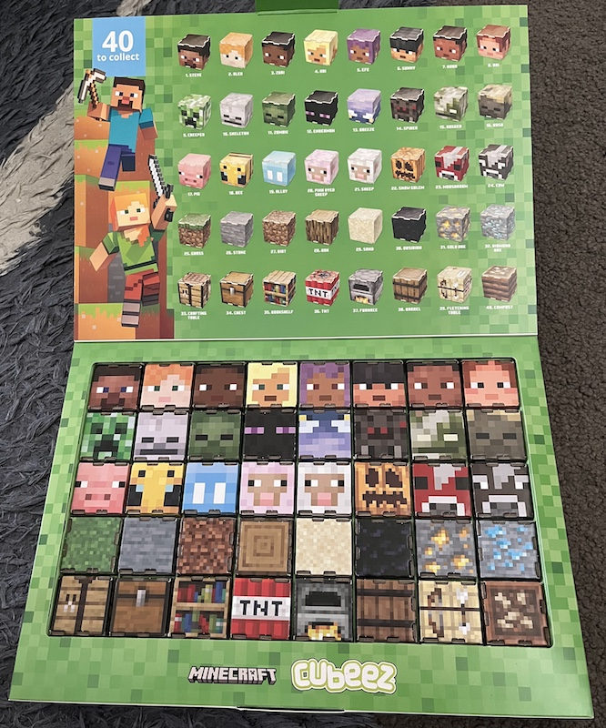

续: 收集40个方块有多难
时隔一年, Woolworth超市又推出了买东西集卡片活动. 上次是迪士尼, 这次是Minecraft. 依然是让小朋友们着迷的东西. 这次花30块钱可以拿到一包minecraft的Cubeez, 拆开后可以自己拼装成一个小方块, 很符合Minecraft的风格. 总共有40种小方块, 然后官方还有个盒子, 放在盒子里, 很漂亮.
谦曾经是Minecraft的忠实粉丝, 在国内的时候我就给他买了一套, 然后他建造各种地图, 甚至还把自己建造的地图发给视频博主, 让博主玩他建造的地图. 后来他还玩Minecraft Dungeon, 是一个类似于大菠萝的游戏, 不过人物全都是MC里面的人物.
还是套用上次的公式, 看一下收集到40个方块的数学期待是需要花多少钱.
假设你已经收集了$n$个方块, 那么你下一次收集到一张新方块的概率是$\frac{40-n} {40}$. 所以你下一次收集到一张新方块的期望是$\frac{40} {40-n}$. 所以你收集到所有卡片的期望是:
\[\sum_{n=0} ^{39} \frac{40} {40-n} = 40 \sum_{n=1} ^{40} \frac{1} {n} \approx 171.14\]看着有点熟悉是吧, 这就是调和级数(harmonic numbers), 我记得还是有近似解的. 当然谦的高中教材是不会教这个的, 但是这也不妨碍他自己推导出来.
也就是说, 平均而言, 你只要肯在Woolworths超市花$171.14 \times 30 = 5134.2$刀, 你就能收集到所有方块. 问题解决.
照例也展示一下收集齐的结果:

当然, 我们没有真的在超市花5000多刀. 还是在facebook的一个群组上跟别人换的, 加上同事知道我在收集, 送给我们的. 估计实际花了也就100刀左右.
最后吐槽一下Minecraft的中文翻译. 不知道为啥要翻译成“我的世界”, 明明人家本来的英文意思凸显了这个游戏的精髓: 挖矿和建造. 网上找到一篇文章, 可能解释了一些原因吧: